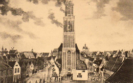

De Peperbus is gebouwd tussen 1454 en 1463. Hij was toen echter helemaal
stomp van boven. Doordat de toren van de Grote of Sint-Michaëlskerk in
1669 afbrandde wilde men een nieuwe representatieve toren in Zwolle. In
1727 werd daarom een uivormige kap op de toren geplaatst. In 1815 werd
het bovenste deel van de toren verwoest door een brand. De toren werd
hersteld en voorzien van het huidige koepelvormige dak
neoclassicistische stijl.